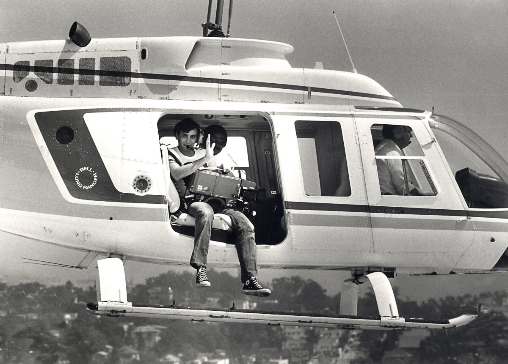

What began as a fatal carjacking on January 3, 1992, at 10:30 a.m., in Central California became the catalyst for change in local television that redefined live coverage of breaking news.
Although newsrooms have had access to helicopters for years, it wasn’t until Darren Michael Stroh led police on a 300-mile pursuit that the public developed a hunger for live pictures of a dramatic, high-speed chase.
Stroh, an unemployed electrician’s assistant, carjacked two vehicles, killing a motorist with a 12-gauge shotgun before heading south to Los Angeles on Interstate 5. Highway Patrol officers tailed the Volkswagen sedan through five counties as Stroh took potshots at officers through the back window.
When they crossed the L.A. County line, local news helicopters picked up the chase, broadcasting pictures live. Stroh eventually slowed to a crawl as he ran out of gas on a Westminster freeway offramp.

When officers approached the car, guns drawn, Stroh pointed his shotgun in their direction, and police opened fire. The TV choppers captured it, and for the first time, viewers got a front-row seat to the live killing of a suspect; his brains were blown out of the driver’s side window.
I remember it as though it was yesterday, because I was the cameraman who shot it from the KABC helicopter. What I saw through my viewfinder was witnessed by tens of thousands of viewers, a violent death broadcast in real time.
It didn’t take long before high-speed police pursuits became a staple of local news. Stations regularly interrupt programming to bring viewers these Roman Colosseum-style spectacles delivered right to their home screen. There are even 24/7 channels dedicated to police pursuits.
As a witness to this man’s death, I became an active participant. It troubles me that my role in bringing the horrific scene to viewers helped fuel a thirst for more. It wasn’t long before every local news department had a helicopter, and stations were interrupting programming with every local high-speed chase.
Within a year, my participation was rewarded with a “Golden Mike” award for best coverage of a live breaking story. I didn’t attend the ceremony; I was already living with a strange sense of survivor’s guilt. I couldn’t fathom being rewarded for capturing the death of an armed criminal live when all I did was point the camera.
When UPS delivered my Golden Mike, I pitched it—three-pointer style—into the trash bin. Since Stroh’s death, the passion for live news televised from noisy helicopters has proliferated the airwaves. Fires, floods, O.J. Simpson’s “Bronco Blanco” chase, and yes, the staple of aerial news, the high-speed police pursuit.
News Choppers have even televised neighborhood chickens roaming the streets as if the public couldn’t survive without this important life-altering information. Airborne journalists have become experts in the tactics of the chase. 35 years ago, nobody knew the term “Pit Maneuver,” but today it’s the everyday vernacular of the airborne chase-caster.
The dark side of this late 20th-century phenomenon is the deaths of helicopter journalists. It’s no easy task to fly an aircraft, communicate with air traffic control, jockey for your spot in the sky, and avoid other news helicopters, all the while broadcasting to the public what they are seeing—live.
In 1977, Francis Gary Powers and George Spears were killed in the tragic crash of KNBC’s “telecopter.” Powers lost track of his fuel gauge, and they plummeted to the ground, their fuel tank completely empty. In 2007, a pair of Arizona news choppers collided while covering a pursuit, killing all four occupants.
These deaths beg the question: Is the benefit worth the risk?
I was forced to make that decision years ago as a participant in this Russian Roulette of daily broadcasting. I felt my days were being numbered. Most weekdays, I flew in a bright yellow Channel 7 News helicopter we affectionately called “Tweedy Bird.”
Sometimes we responded to a call on the police scanner; other times we flew to look at girls in bikinis on the Malibu beaches. We flew over stars’ homes; we even came within inches of landing on Downtown buildings—just to see people’s faces as we flew by their office window. Heck, it wasn’t illegal, and it was “fun.”

One of our regular pilots was a police officer who never got tired of buzzing his ex-girlfriend’s suburban home. We would refuel at Fullerton Airport all the time just so he could let her know he hated her.
Years ago, while flying to the scene of a traffic accident, I experienced my most frightful moment when an F-117A fighter jet approached at high speed. Before I could even warn my pilot, the aircraft passed directly across our flight path. It was an unbelievably close call, and I didn’t sleep for a week. I thought of telling my bosses I no longer wanted to fly, but that would definitely affect my career.
At about the same time, I became aware of a chopper crash that killed Frank Wells, the COO of the Walt Disney Company. His death rattled Disney executives, who instituted a policy that employees should endeavor NOT to fly in single-engine aircraft or without a co-pilot. Yet here we were, a division of Disney, flying daily, policy notwithstanding.
Not long after my close call, I was sent to cover a drug bust in a national forest. Federal officers were removing hundreds of pounds of marijuana, and my correspondent arranged for me to fly with them as they removed the plants.
Visibility was poor, and it was beginning to rain. My reporter was getting restless, and my producer was pressuring me to fly. I was being pushed to do something I knew was unsafe, and I refused. My colleagues were angry, but I never flew in a helicopter again.
I was being pushed to do something I knew was unsafe, and I refused. My colleagues were angry, but I never flew in a helicopter again.
Two weeks ago, Los Angeles lost more precious lives when NBC4 and Telemundo 52’s news chopper tragically fell to the ground and erupted in flames. Pilot George Marciniw and reporter Eliana Moreno died instantly, as did a victim on the ground.
Again, we are mourning the losses, yet not asking the question: Is the benefit worth the risk?
The news chopper community will decry my query, but we have other options. Police departments have embraced drone technology to address crime, reducing helicopter-related danger. Broadcasters should work with the government to permit aerial coverage using drones rather than helicopters.
We can still watch aerials of chickens roaming the streets and the inevitable high-speed car chase that viewers have come to love. Now is the time to make the change and save lives.
Filed under OpinionMediaLos Angeles